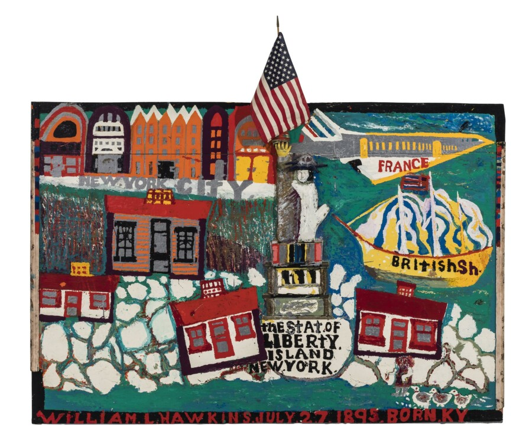

Night of Ideas: Liberty Enlightening the World
Join us for Chicago’s fifth Night of Ideas, organized by Villa Albertine in partnership with Intuit Art Museum. Celebrating the 250th anniversary of the United States, this year’s edition centers on the theme of freedom—drawing inspiration from the Statue of Liberty, the iconic Franco-American symbol of emancipation and friendship.
The evening opens with remarks by Charlotte Montel, Consul General of France, and features keynote speaker Gabrielle Lyon, Executive Director of Illinois Humanities; a performance by harpist and former Villa Albertine resident Isabelle Olivier; and conversations with Debra Kerr, Tiphanie Babinet, Shawn-Laree and Daniel X, and Sibylle Friche. Hands-on workshops, gallery activations, and youth programming round out a dynamic program.
Hosted within the distinctive setting of Intuit Art Museum, dedicated to outsider art, the event invites reflection on freedom through contemporary artistic experimentation. Beginning in daylight to welcome families and concluding at night, this edition blends talks, performances, and creative activities designed to spark dialogue and renew our shared sense of possibility.
William Hawkins (American, 1895-1990). The Statue of Liberty, 1986. Paint, collage, enamel and found object on plywood, 73 x 84 1/4 x 5 3/4 in. Collection of Intuit Art Museum, gift of Lael and Eugenie Johnson, 2004.37.1. © Estate of William Hawkins, courtesy of Ricco/Maresca Gallery. Photo by Michael Tropea, Chicago